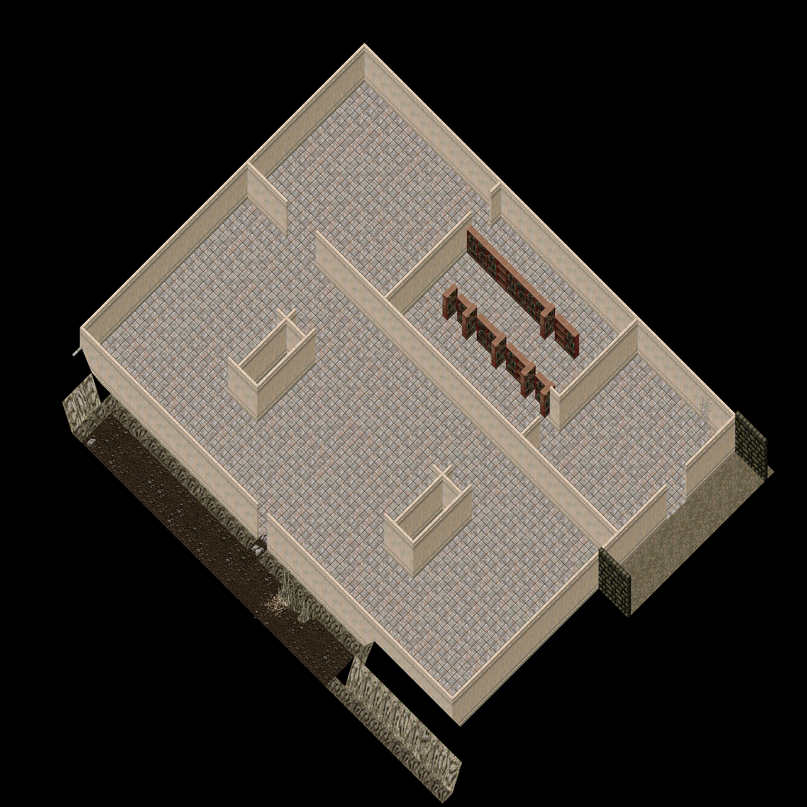
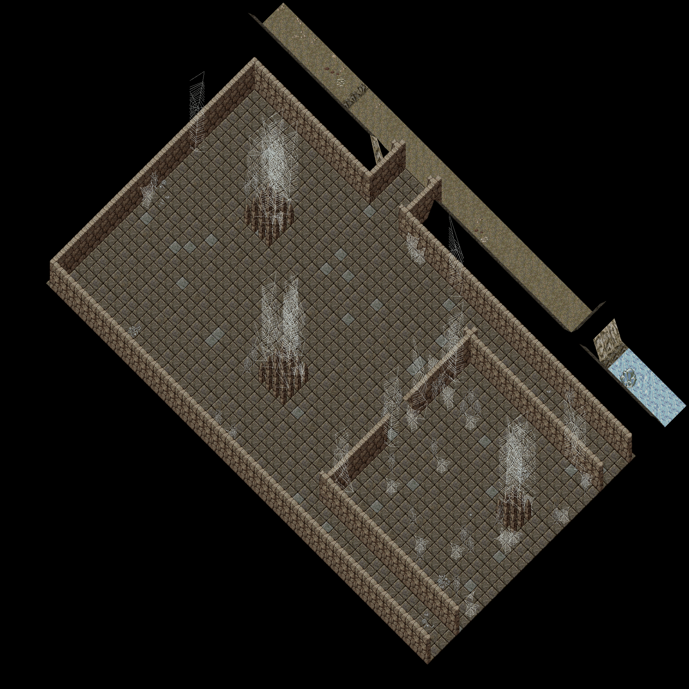

cc-P181, 2026-10-19. P141's approved layout built into a scratch copy of Trammel (outside both repos); nothing has touched the real map files. Drawn by scripts/mapbuild/isorender.py from the real tiles with the client's layout (no hues, no lighting). Round 1 (2026-10-18) is kept in round1/, round 2 (2026-10-19 00:23) in round2/.
| Round 2 | Round 3 |
|---|---|
 | |
| Round 2 | Round 3 |
|---|---|
 |  |
OSI's Lycaeum (Moonglow, Trammel 4286-4293 x 962-999, from ModernUO's Britannia/moonglow.cfg decoration file) runs its east-west rows with 0x0A97, 0x0A98 and 0x0A9B only, its north-south column with 0x0A99, 0x0A9A and 0x0A9C only, and puts a candelabra stand (0x0B26) at a row's end. Round 2 mixed both facings in one row.


Marble: pier 0x0113/0x0115 on the wall tile each side of the gap and the half arch 0x0114/0x0116 on the first open tile (Nujel'm 3737-3740 x 1323; Magincia column 3716, y 2064-2070). Stone (the lair mouth): 0x01D8 on the first open tile, 0x01D9 on the wall tile after (Terathan Keep column 5431). Cave gaps: a stalagmite or crystal on the rock either side. Passages between two floors (the Brood Pit mouth, the tunnels) have no wall line to frame and stay as OSI leaves a run's end: plain.


Densities measured in notes/cc-P181-cont-rootdeep-round3.md (map statics plus the decoration items ModernUO adds): Deceit level 1 has something within one tile of 48 percent of its 386 inner corners (bones, small webs, rubble, garbage, torches), Covetous 66 percent of 247 (spiderwebs, debris, skulls), Khaldun 38 percent of 432 (rubble, braziers, skulls), Terathan Keep 59 percent of 98 (rubble, torches, webs, a cocoon). Our rule: every inner corner gets at least one thing, most get two or three.


x 5174-5209, y 1128-1166 (36 x 39 tiles). The Landing (safe), the arrival, the ankh wall, the Vault doorway at x 5179 with its marble arch, and the tunnel south to the Warren. 480 KB

x 5138-5182, y 1128-1164 (45 x 37 tiles). The Vault (tutorial only): Counting Room, the Stacks with its two bookcase rows, Deposit Hall, the Strongroom with its two walled pillars, the three arched gaps, the crawlway in the south wall at x 5160. 571 KB
x 5140-5190, y 1158-1200 (51 x 43 tiles). The Warren, west: Crawl Den (the crawlway lands at 5160,1162) and the Great Burrow west half. 972 KB

x 5182-5244, y 1158-1198 (63 x 41 tiles). The Warren, east: Tunnel Foot (the landing tunnel lands here), the Great Burrow east half, and the Brood Pit through its mouth at x 5209-5211. 909 KB

x 5138-5196, y 1194-1236 (59 x 43 tiles). The Tangle (tier 2): the root cavern with its five rock-and-log root masses, the Thicket behind its framed gap at x 5157, the passage east to the Dawnseam. 1018 KB

x 5190-5246, y 1194-1236 (57 x 43 tiles). The Dawnseam (tier 2): the crystal seam with its five crystal clusters, the Seam Heart behind its framed gap at x 5227. 784 KB

x 5146-5201, y 1226-1264 (56 x 39 tiles). The Gloom, west half (tier 3): the descent from the Tangle, the ring tunnels, two web masses, the lair mouth at x 5183 with arch (a) and the webs. 718 KB
x 5190-5240, y 1226-1264 (51 x 39 tiles). The Gloom, east half: the descent from the Dawnseam, the Queen's lair with its two web pillars, the east and south runs. 672 KB

Every static placed is in notes/cc-P167-tools/statics-placed.csv; land by id and Z in land-summary.csv; the rules (seeds, weights, clusters, corners, frames) in plan-sets.json; the builder is build_burrows.py on scripts/mapbuild/, the renders render_burrows.py; the corner table and checklist in notes/cc-P181-cont-rootdeep-round3.md.